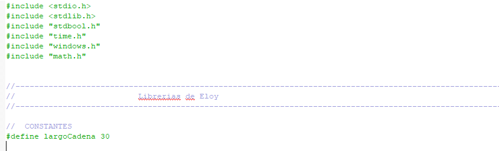

Estructuras
Miembros
Libros
Prestamos
Dependencias

FUNCIONES
GESTION DE LIBROS
void menuLibros(); - Menú de gestión de librosvoid menuMostrarPorCampoLibro(); - Muestra según el campo el/los libros pertinentesvoid agregarLibroArchivo(stLibro libroAgregable); - Agrega un libro al archivovoid cargarstLibro(stLibro *nuevoLibro); - Carga todos los campos de un librovoid modificarLibroEnRegistro(); - Permite la modificación de librosvoid modificarstLibro(stLibro *libroAModificar); - Pregunta qué campo se desea editar y se edita mientras se ve por pantallavoid mostrarCantLibrosCargados(); - Muestra la cantidad de libros cargados (numeralmente)void mostrarLibroPorAutor(char autor[]); - Muestra el libro según su autorvoid mostrarLibroPorGenero(char genero[]); - Muestra el libro según su génerovoid mostrarLibroPorISBN(int isbn); - Muestra el libro según su ISBNvoid mostrarLibroPorTitulo(char titulo[]); - Muestra el libro según su títulovoid mostrarLibrosDisponibles(); - Muestra los libros disponiblesvoid mostrarRegistroLibros(); - Muestra el archivo libro por pantalla con todos sus elementos que estén cargadosvoid mostrarstLibro(stLibro libro); - Muestra la estructura librostatic void informarErrorAperturaArchivoLibros(); - Muestra un mensaje de error de aperturabool isbnExisteEnArchivo(int isbnABuscar); - Verifica si un libro existe en el archivo por ISBNbool stringExisteEnArchivoLibro(char cadena[], char tipo[]); - Verifica si una cadena existe en el archivo de libros según tipo (título, autor o género)int copiarArchivo(char archivoOrigen[], char archivoDestino[]); - Copia el contenido del archivo origen al archivo destinovoid eliminarArchivoSiVacio(char nombreArchivo[]); - Verifica si el archivo está vacío y lo elimina en ese casovoid eliminarLibroDeArchivo(); - Elimina un libro del archivo mediante su ISBNvoid moduloEliminarLibrodeArchivo(int isbm); - Busca y elimina un libro por su ISBN del archivo
Gestion de miembros
void menuMiembros(); - Llamada a funciones para gestionar miembros y archivosvoid menuMostrarPorCampo(); - Menú para mostrar miembros según un campo específicovoid registrarMiembro(); - Carga y verifica si el miembro ya existe en el archivovoid cargarstMiembro(stMiembro *nuevoMiembro); - Carga todos los campos de stMiembros por el usuariostMiembro obtenerMiembro(int id); - Obtiene un miembro por su IDvoid modificarMiembroEnRegistro(); - Obtiene el usuario y llama a la modificación de sus camposvoid modificarstMiembro(stMiembro *miembroAModificar); - Modifica los campos de la estructura miembroint obtenerUltimoIdMiembros(); - Busca y retorna el último ID del archivo de miembrosvoid agregarMiembroArchivo(stMiembro miembro); - Carga el miembro recibido al final del archivobool miembroExisteEnArchivo(stMiembro miembroAVerificar); - Verifica si el miembro está en el archivobool verificarMiembroID(int idMiembro); - Verifica si el ID recibido existe en el archivovoid mostrarArchivoMiembros(); - Muestra por pantalla todos los miembros registradosvoid mostrarMiembroID(int id); - Muestra por ID (debería mostrar solamente 1)void mostrarMiembroDNI(char dni[]); - Muestra por DNI (debería mostrar solamente 1)void mostrarMiembroNombre(char nombre[]); - Muestra por Nombre (debería mostrar todas las coincidencias)void mostrarMiembroApellido(char apellido[]); - Muestra por Apellido (debería mostrar todas las coincidencias)void mostrarCantMiembrosCargados(); - Imprime por pantalla la cantidad de miembros cargadosvoid mostrarstMiembro(stMiembro miembroMostrable); - Muestra el miembro recibido por pantallastatic void mostrarCajitaDeuda(float monto); - Muestra la deuda del miembrostatic void informarErrorAperturaArchivoMiembros(); - Muestra un mensaje de error de aperturavoid informarErrorIDNoValido(); - Informa sobre un ID no válidovoid purgarArchivoMiembros(); - Elimina los miembros no activos del registro y reordena el archivonodoMiembro *inicListMiembro(); - Retorna NULL para los nodoMiembronodoMiembro *crearNodoMiembro(stMiembro datosMiembro); - Crea un nodo y lo retorna cargadonodoMiembro *agregarAlistaMiembro(nodoMiembro *lista, nodoMiembro *nuevoMiembroNodo); - Agrega el nodo a lo último de la listavoid pasarListaMiembrosAArchivo(nodoMiembro *lista); - Pasa los nodos miembros al archivo de manera ordenadavoid mostrarListaMiembros(nodoMiembro *lista); - Muestra recursivamente la lista
Prestamos y devoluciones
void prestamoMenu();void mostrarCategorias(nodoLibro *lista);stPrestamo obtenerReservaLibro(int ibsm);void imprimirPrestamo(stPrestamo prestamo);
ARBOLES
arbolNodoLibro * inicArbolNodo();void verArbolCategoria(char categoria[], nodoLibro * lista);void imprimirArbol(arbolNodoLibro * raiz);arbolNodoLibro * crearNodoArbolLibro(stLibro dato);arbolNodoLibro * insertarLibroEnArbol(arbolNodoLibro * nuevoLibro, arbolNodoLibro * raiz);bool nodoArbolLibroExiste(int ibsm, arbolNodoLibro *raiz);arbolNodoLibro * encontrarCategoria(char categoria[], nodoLibro * lista);arbolNodoLibro * obtenerLibroPorISBN(int isbn, arbolNodoLibro * raiz);
NODOS | LISTA
nodoLibro * pasarLibrosArbol(nodoLibro * lista);bool categoriaExisteEnLista(char categoria[], nodoLibro * lista);nodoLibro * crearCategoria(char categoria[], nodoLibro * lista);nodoLibro * crearNodoLibroParametro(char categoria[]);nodoLibro * inicNodoLibro();arbolNodoLibro * cargarLibroArbol(arbolNodoLibro * nuevoLibro, arbolNodoLibro * raiz);nodoLibro *prestarLibro(nodoLibro *lista);
ARCHIVOS
void agregarPrestamoArchivo(stPrestamo prestamo);bool prestamoExiste(int id);void mostrarArchivoPrestamos();void purgarPrestamos();
MIEMBROS
void cambiarEstadoMiembro(int id);
LIBROS
void cambiarEstadoLibro(stLibro libro);
FECHAS
void cargarFecha(stFecha *fecha);void extenderPlazo(stFecha *fecha);
DEVOLUCIONES
void devolverLibro();void eliminarDeudaMiembro(int ID);void eliminarDeudorArchivo(int ID);
Mis "dependencias"
void generarTitulo(char titulo[]); - Crea un título "distintivo"void mostrarCadena(char arr[]); - Muestra por parámetro una cadena de caracteresvoid mostrarCadenaMsg(char msg[], char arr[]); - Muestra por parámetro una cadena de caracteres: datovoid aplicarOffset(char texto[]); - Aplica tabulaciones según el largo del textovoid debug(char msg[]); - Se utiliza para ver los procesos del programavoid crearLinea(); - Imprime una línea en pantallavoid informarValorInvalido(); - Informa que el valor ingresado no es válido
void asignarStringMsg(char cadena[], char mensaje[]); - Recibe por referencia un string y un mensaje al usuariovoid asignarString(char cadena[]); - Recibe por referencia un string para ser cargadovoid asignarValorMsg(int *valor, char mensaje[]); - Recibe por referencia un valor y un mensaje al usuariovoid asignarValor(int *valor); - Recibe por referencia un valor para ser cargado
void colorVerde(); - Cambia el color de la consola a verdevoid colorRojo(); - Cambia el color de la consola a rojovoid colorAmarillo(); - Cambia el color de la consola a amarillovoid colorBlanco(); - Cambia el color de la consola a blanco
bool rangoValido(int min, int max, int opcion); - Valida que la opción esté entre el mínimo y el máximobool preguntarConfirmacion(char msg[]); - Recibe un string para retornar un booleano con la respuesta